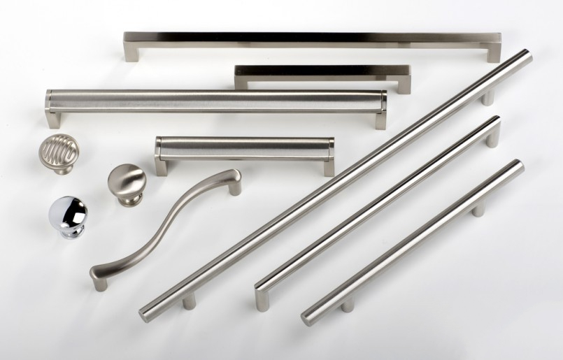

کابینت آشپزخانه با دستگیره
کابینت آشپزخانه با دستگیره به کابینتی گفته می شود که بر روی درب ها و کشوهای آن انواع مختلفی از دستگیره ها در شکل ها، طرح ها و رنگ های مختلف با توجه به میزان بودجه و سلیقه ی افراد نصب می شود و درب ها و کشوها به کمک دستگیره ها باز و بسته می شوند.
کابینت با دستگیره بیشتر برای کابینت کلاسیک و کابینت نئوکلاسیک کاربرد دارد و در کابینت مدرن جایی برای دستگیره لحاظ نمی شود و به طور کلی دستگیره حذف می شود.

انواع دستگیره کابینت آشپزخانه
دستگیره های فلزی
دستگیره های سرامیکی
دستگیره های شیشه ای
دستگیره های چوبی
مزایای کابینت با دستگیره
باز و بسته کردن درب ها و کشوها نسبت به کابینت های بدون دستگیره کمی راحتر است.
دستگیره ها هر کدام زیبایی های مختص به خود را دارند و یک نمای خارق العاده به ظاهر درب ها و کشوهای کابینت آشپزخانه می دهند و آنها را از سادگی و یکنواختی بیرون می آورند.
ظاهر اصلی کابینت با دستگیره نبست به مدل بدون دستگیره شلوغ تر است.
دستگیره ها قابل تعویض هستند، به شرط اینکه اندازه ی دستگیره های قبلی باشند، در غیر اینصورت جای پیچ دستگیره ها به هم نمی خورد.
کابینت آشپزخانه بدون دستگیره
کابینت بدون دستگیره کابینتی است که ظاهر کار کاملاً ساده و یکنواخت است و ست کردن این مدل با دیگر اشیاء موجود در آشپزخانه راحتر است و در واقع می توانم بگویم در حال حاضر نسبت به کابینت با دستگیره، طرفداران بیشتری دارد.
در حال حاضر کابینت مدرن جزء به روزترین و شیک ترین سبک ها برای اجرا در فضای آشپزخانه است و کابینت مدرن یعنی کابینتی که بصورت بدون دستگیره اجرا شده است.
در کابینت بدون دستگیره، درب ها و کشوها چگونه باز و بسته می شوند؟
کابینت هایی که بدون دستگیره هستند، در سه حالت مختلف اجرا می شوند.
کابینت بدون دستگیره مگنتی
مگنت یک قطعه ی مغناطیسی است که در کابینت جای می گیرد و زمانی که درب را به آهستگی فشار می دهید و رها می کنید، مگنت فعال شده و درب باز و بسته می شود.
کابینت بدون دستگیره جک دار
در این روش توسط لولاها یا جک ها، درب ها و کشوهای کابینت به بدنه اصلی متصل می شوند و با بلند کردن و سپس هل دادن باز و بسته می شوند.
کابینت با جای دستگیره
در این روش بین کشوها و زیر درب ها، یک فضایی 5 سانتی قرار داده می شود که تقریباً دو سه سانتی از خود کشو یا درب فرورفته تر است، این حال باعث می شود انگشتان دست بتوانند درب ها را از زیر و کشوها را از رو بکشند تا باز شود و با هل دادن و رها کردن درب ها و کشوها بسته می شوند.